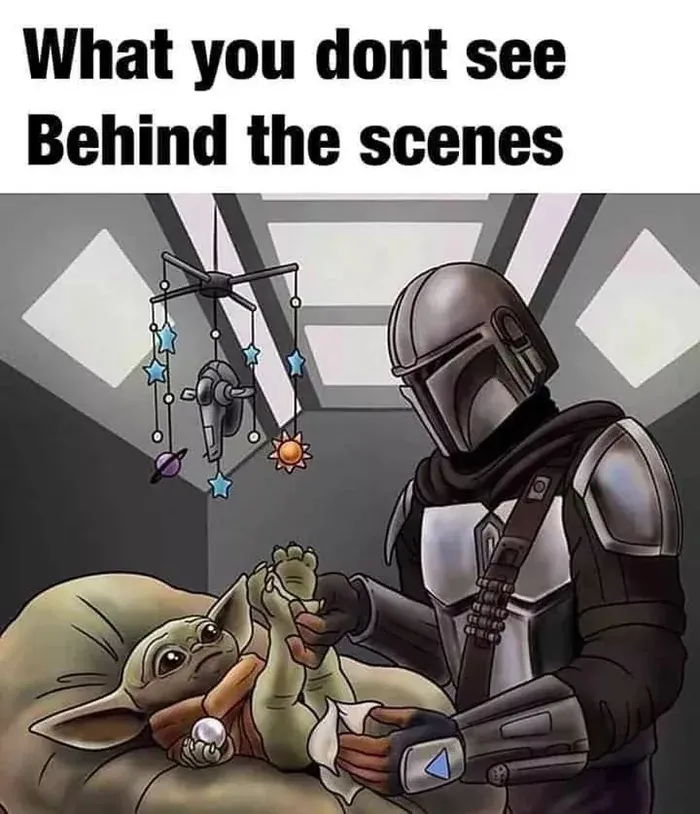

Мы замечаем гладкую презентацию, продуманный дизайн, спокойный ответ в трудный момент. Чего мы не видим, так это всего, что произошло до того, как это стало выглядеть легко.
У хорошей работы есть закулисье. Это повторение, которое даёт уверенность, неуклюжие первые попытки, вопросы, заданные дважды, мелкие проблемы, замеченные до того, как они станут крупными. Мы часто называем итог талантом или чутьём, будто он появился сразу готовым.
Сделать невидимую работу видимой
Команды попадают в ту же ловушку. Мы вознаграждаем видимые результаты и не замечаем усилий, которые делают их повторяемыми: делиться контекстом, помогать коллеге, поддерживать процесс в порядке, учиться на ошибке. Когда эта работа остаётся невидимой, людям может казаться, что значение имеет только финальный штрих.
Признание работы за работой меняет то, что мы ценим. Оно позволяет учиться на процессе, улучшать его и отдавать должное тем, кто этого заслуживает. Мастерство редко бывает одним большим жестом. Чаще это множество маленьких проявлений внимания, сохранённых во времени.
В следующий раз, когда что-то покажется лёгким, присмотритесь. Под этим может скрываться много заботы.